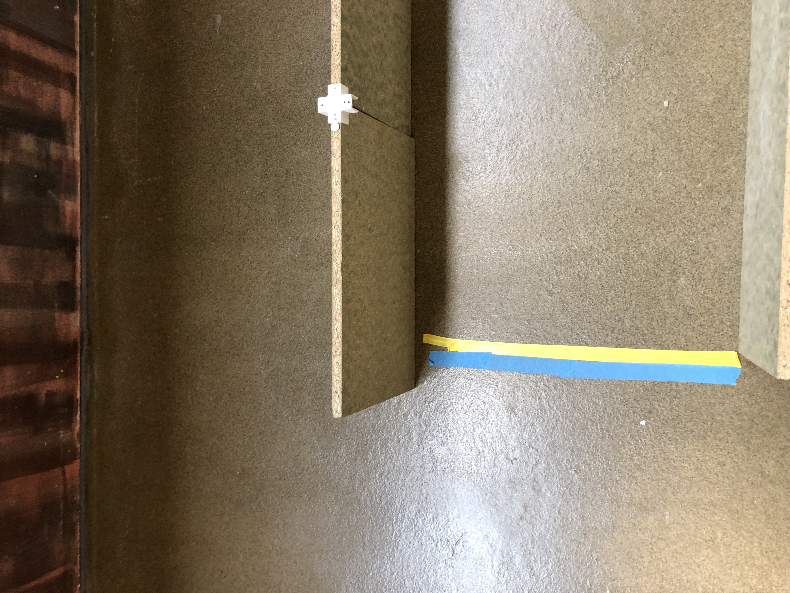

Robot Lego
Bienvenue dans notre projet Robot Lego.
Photo du Robot.
Le Parcours.
Quelques photos sur le terrains de parcours du Robot
>

Le Programme du Robot
Le logiciel cratch est un logiciel pas difficile à utiliser. Il est détaillé avec des parties bien définies: Sur la partie moteur il y’a tout les instructions à utiliser pour activer , définir la vitesse, comment tourner le moteur etc…. De même pour les capteurs aussi. Il suffit d’aller sur la partie capteur et voir les différentes instructions comme détecter, tourner à gauche, droite etc…. Les autres c’est juste une question de logique à suivre pour commander le nombre de répétitions,mettre un son ( y’a une partie son ). Ainsi le programme du Robot est la suivante :